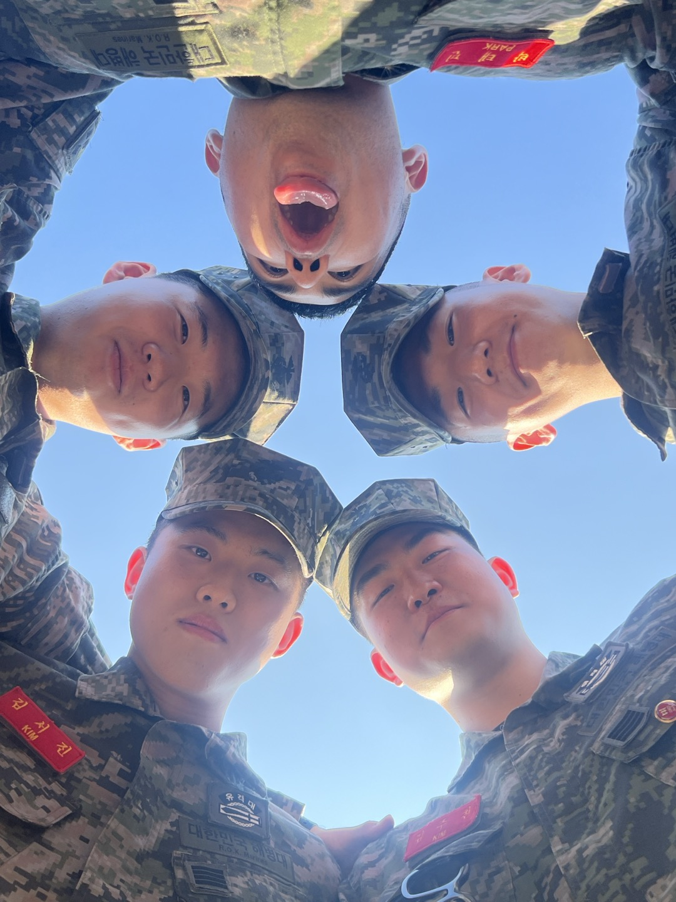
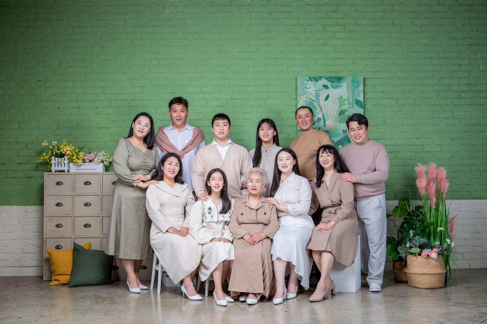
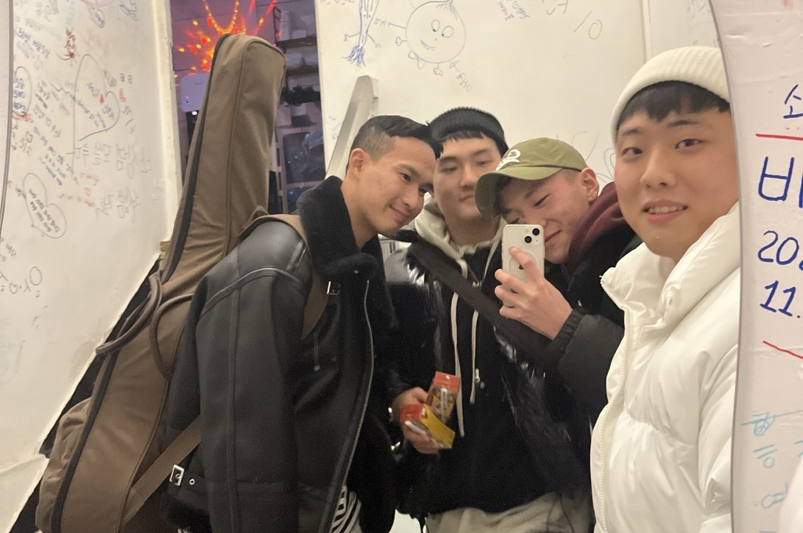
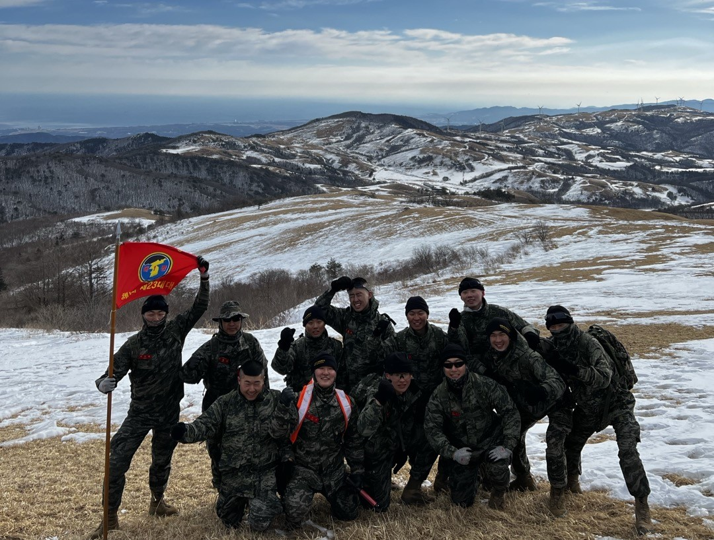
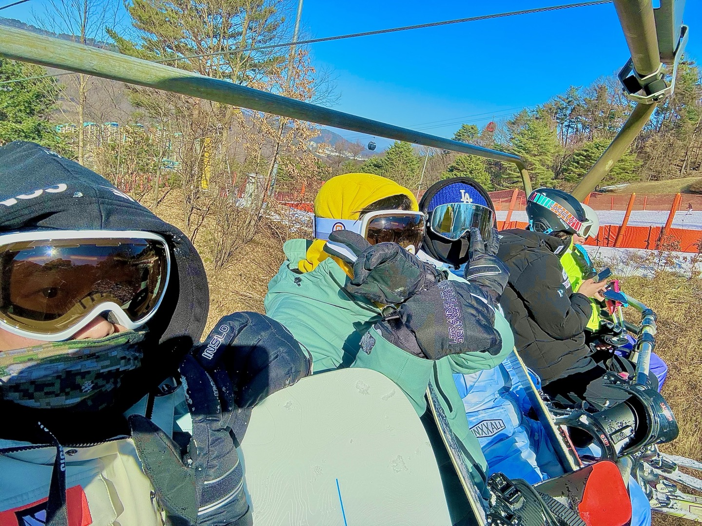
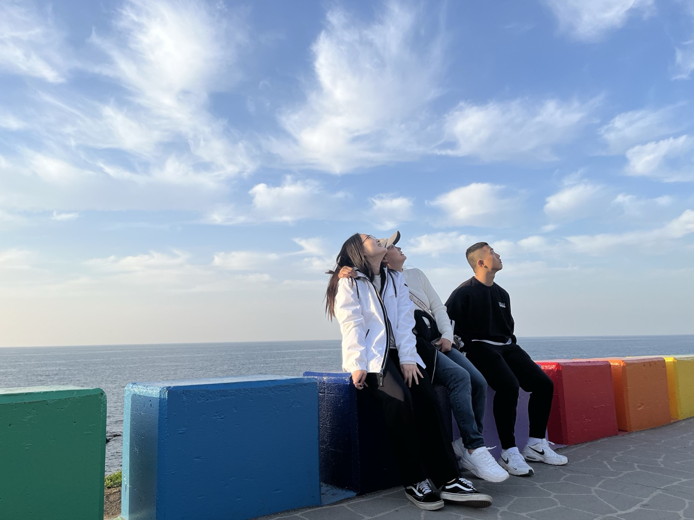
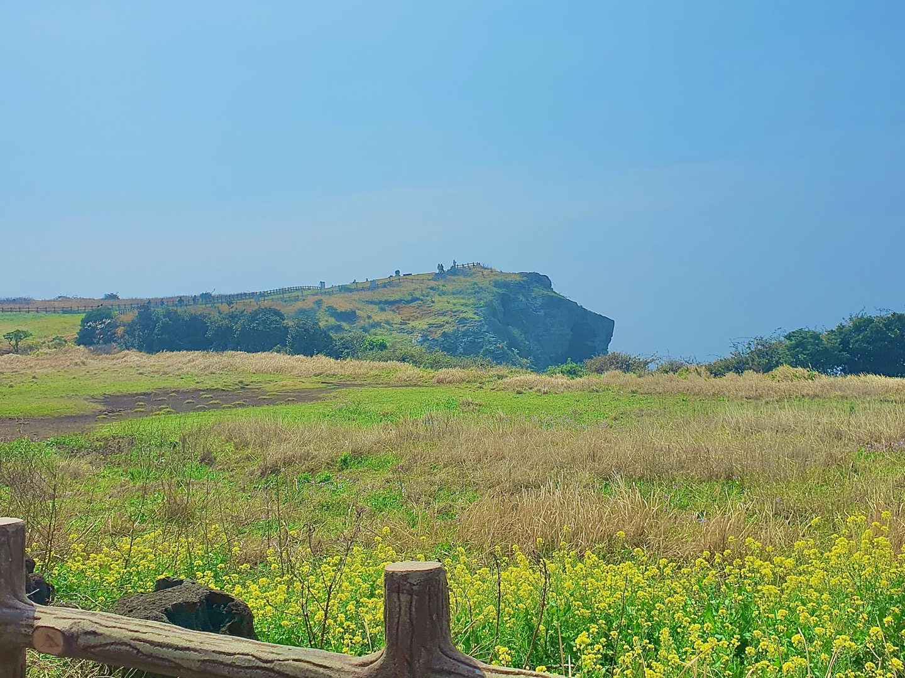
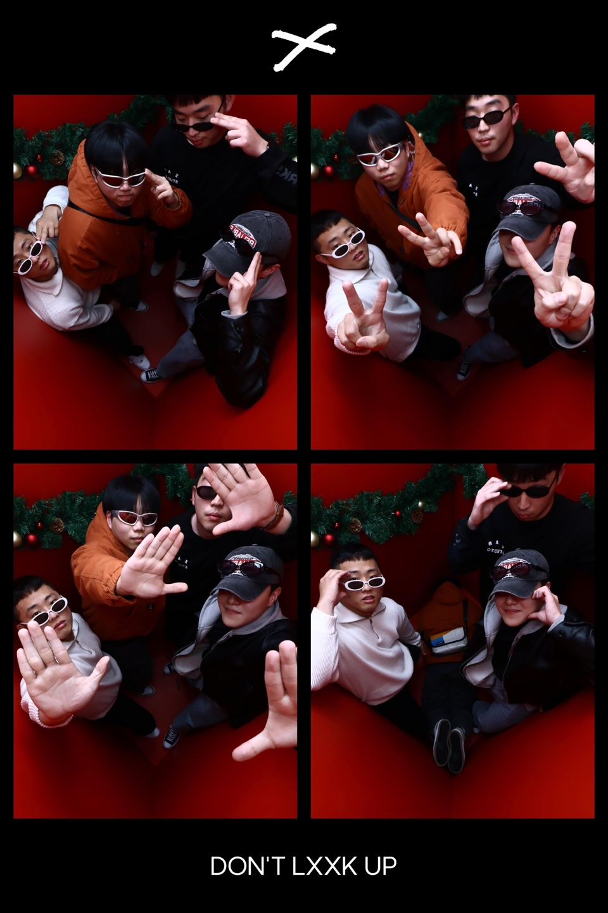
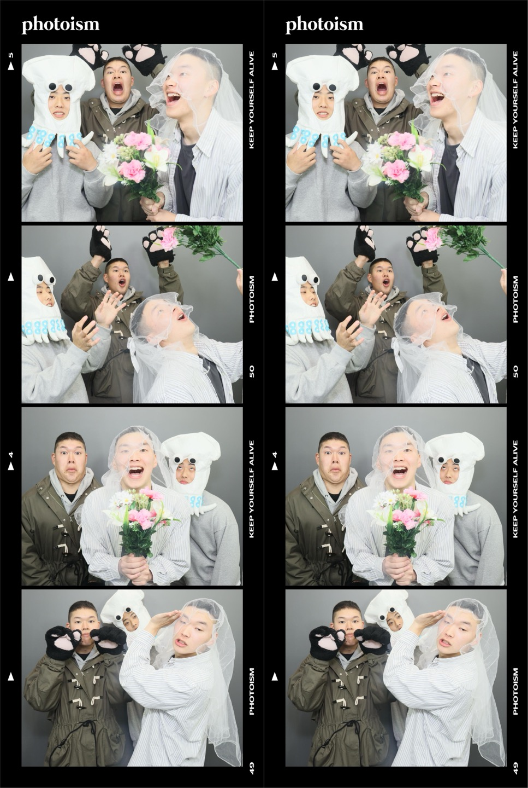

My Personal Page
Welcome to my first homepage!
I am a student in the Department of Computer Engineering at Kangwon National University, South Korea.
This homepage consists of an introduction page about me, a photo page with my memories, and a portfolio page.
On the recollection page, there are five kinds of pictures : family & friends, ROKMC, activity, travel, and picture.
On the portfolio page, there is a description of the project I did in high school and a pdf file.
Whenever I have a picture with good memories, and whenever I make a good project, I will add it to my homepage.
My recollections
< Family & Friends >


< ROKMC >

< Activity >


< Travel >


< Picture >


My Portfolio
< In High school >
- Robot Vacuum Cleaner Designed with Arduino and Robot Vacuum Cleaner App Made with App Inventor
아두이노로 설계한 로봇청소기와 앱인벤터로 제작한 로봇청소기앱 - Mini soccer board game made with 3D printer and Arduino
3D 프린터와 아두이노로 제작한 미니 축구보드게임 - Correlation between COVID and YouTube Channel Growth, as confirmed by Data Analysis
데이터 분석을 통해 확인한 코로나와 유튜브 채널 성장의 상관관계 - Coin toss probability comparison program using C
C언어를 사용한 동전 던지기 확률 비교 프로그램 < In University >
- To be added in the future